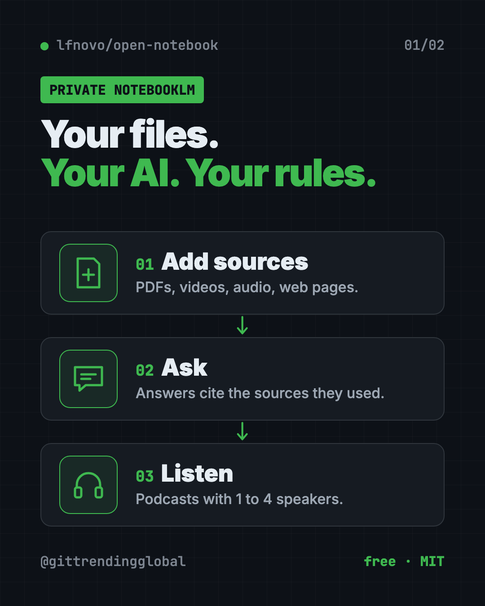
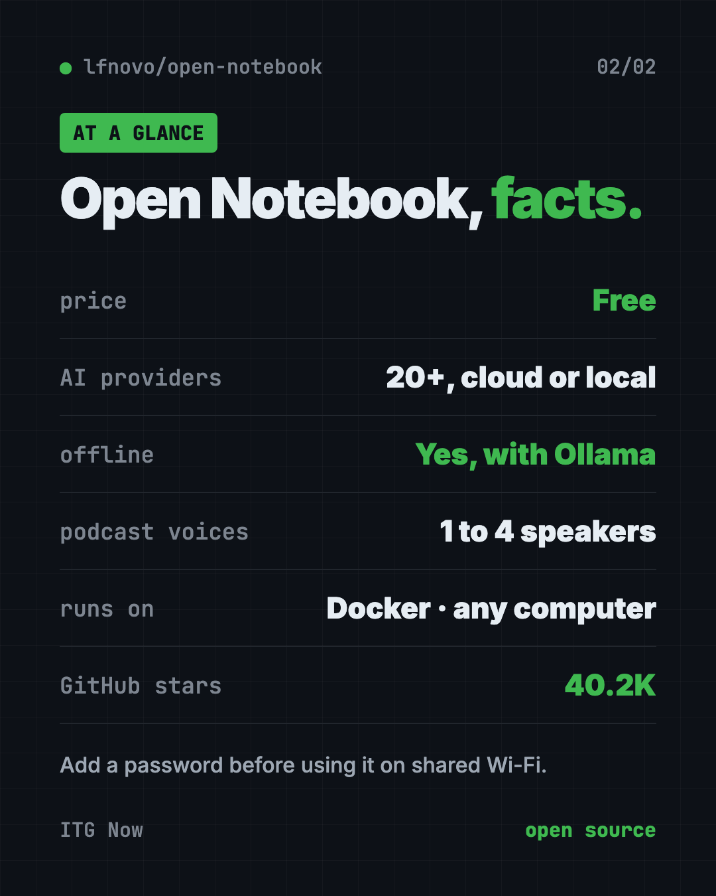

Open Notebook: A Free NotebookLM Alternative You Own
- Published 15 Oct 2026
- Updated 16 Oct 2026
- 7 min read
- License MIT
- By the ITG Now team
Open Notebook is a free NotebookLM alternative that you run on your own computer. Drop in PDFs, videos and web pages, ask questions, get answers with sources, and turn your research into a podcast.
The README calls it "an open source, privacy-focused alternative to Google's Notebook LM." It has about 40.2K stars on GitHub.
See all free alternatives to NotebookLM
Key takeaways
- Your data stays with you. You host it yourself. With local AI models, the README says nothing leaves your machine.
- Pick any AI. More than 20 providers, including OpenAI, Anthropic, Google, Mistral and free local models through Ollama.
- Podcasts with 1 to 4 speakers, versus 2 in Google's NotebookLM, per the README's comparison.
- Answers with citations, so you can check where each fact came from.
- Free and open source under the MIT license. You only pay for the AI you use, or nothing with local models.
What is Open Notebook?
AI research notebooks are great. You drop in your files, then ask questions and get answers with sources. Google NotebookLM made this popular.
The catch: everything lives on Google's servers, and you can only use Google's AI.
Open Notebook gives you the same idea on your own terms. It runs on your computer and opens in your browser. You choose the AI. You keep the files.
You organize work into notebooks. Each notebook holds sources (your files and links) and notes. Then you chat with the AI about what's inside.

What can Open Notebook do?
From the README:
- Read many kinds of files: PDFs, videos, audio, web pages, Office documents and more.
- Chat with your research. The AI answers using your sources and cites them.
- Search everything, by exact words or by meaning.
- Write notes, by hand or with AI help.
- Make podcasts with one to four speakers and custom voice profiles.
- Transform content, like summing up a source or pulling out key points.
- Speak your language. The interface comes in 14 languages, including Spanish, French, German, Chinese and Japanese.
It even has a REST API and an MCP connection. That means other apps, like Claude Desktop, can work with your notebooks.
How to use Open Notebook (real examples)
- Study for an exam. Add your lecture PDFs and recordings. Ask "What are the five main ideas in week 3?" and check the cited pages.
- Turn reading into listening. Make a two-host podcast from a long report and play it on your commute.
- Research a big purchase. Drop in product reviews and spec sheets. Ask which one fits your needs, with sources.
- Keep work files private. Analyze contracts or internal docs with a local AI model, so nothing goes to the cloud.
- Write a report faster. Ask for a summary of each source, then build your outline from the notes.
💡 Tip: Start with one small notebook and three or four sources. Ask a question you already know the answer to. It's the fastest way to see how well your chosen AI model works.
Is Open Notebook free?
Yes. Open Notebook is free and open source under the MIT license.
The AI part is where costs can come in. If you connect a paid provider like OpenAI or Anthropic, you pay them for what you use. If you use a local model through Ollama, the README says you can "run models locally without API costs."
Google NotebookLM, by comparison, has a free tier plus a monthly subscription, per the README's table.
Open Notebook vs Google NotebookLM
Here's the README's own comparison, simplified:
| Open Notebook | Google NotebookLM | |
|---|---|---|
| Where your data lives | Your computer or server | Google's cloud |
| AI choice | 20+ providers, cloud or local | Google models only |
| Podcast speakers | 1 to 4 | 2 |
| API access | Full REST API | None |
| Cost | Pay only for AI use | Free tier plus subscription |
NotebookLM is easier to start: you just sign in. Open Notebook takes a few setup steps, but you get control in return.
Open Notebook at a glance
| Price | Free (AI provider costs, if any, are yours) |
| Works offline | Yes, with local models like Ollama |
| Platforms | Mac, Windows, Linux, via Docker |
| License | MIT (open source) |
| AI providers | 20+, including OpenAI, Anthropic, Google, Ollama |
| Languages | 14 interface languages |
| Best for | Students, researchers and teams with private documents |

How to install Open Notebook
You need Docker Desktop (free, for Mac and Windows) or Docker Engine on Linux. Docker runs apps in a neat, sealed box. You also need an AI provider key, or a local model server like Ollama.
Step 1. Open Terminal and download the setup file. Copy and paste this:
mkdir open-notebook && cd open-notebook
curl -o docker-compose.yml https://raw.githubusercontent.com/lfnovo/open-notebook/main/docker-compose.yml
Step 2. Open docker-compose.yml in a text editor and change this line to your own long random secret:
- OPEN_NOTEBOOK_ENCRYPTION_KEY=change-me-to-a-secret-string
The README suggests making one with openssl rand -hex 32. Keep it safe. It protects the API keys you store.
Step 3. Start it. Copy and paste this:
docker compose up -d
Wait about 30 seconds, then open http://localhost:8502 in your browser.
Step 4. Connect an AI. In the sidebar, open Models, pick your provider, click Add Configuration, and paste your key. Add at least one Language model and one Embedding model. Then click Auto-assign Defaults.
⚠️ Heads up: The README says there's no password by default, and the app is reachable from other devices on your network. On shared Wi-Fi, add
- OPEN_NOTEBOOK_PASSWORD=your-passwordto the file before you start, or limit the ports to your own computer.
Anthropic and Groq don't offer embedding models, so pair them with a provider that does, like OpenAI, Google or Ollama.
Let Claude or Codex set it up for you
Claude Code and OpenAI Codex are AI helpers that run setup steps on your computer. You paste a request and approve each step. The project also offers its own installation helper as a custom ChatGPT.
Copy and paste this:
Please help me install Open Notebook from github.com/lfnovo/open-notebook.
1. Check that Docker is installed and running. If not, help me install it.
2. Follow the README Quick Start to download docker-compose.yml.
3. Generate a strong encryption key and put it in the file.
4. Add a password so other devices on my Wi-Fi can't open it.
5. Start it and tell me when http://localhost:8502 is ready.
Then try asking:
Set up Open Notebook to use free local AI with Ollama, following the Local Quick Start.
Which embedding model should I use in Open Notebook if my main AI is Claude?
Show me how to back up my Open Notebook data.
Our take
Open Notebook is the strongest free NotebookLM alternative we've seen for people who care about privacy and choice. Setup takes four steps, and after that it lives in your browser tab.
What we like:
- Your files stay on your machine.
- Any AI you like, including free local models.
- Flexible podcasts with up to four speakers.
- Cited answers you can check.
- Clear README with a warning about network safety.
What to watch for:
- Needs Docker and a few setup steps. Not one click.
- No password by default.
- You manage your own AI keys and costs.
- Local models need a decent computer to run well.
Want an AI tutor that learns from your notes? Try DeepTutor. To run big AI models on your own computer, see our Colibri guide. Need to turn long recordings into text first? Read about VibeVoice.
FAQ
Is Open Notebook a free NotebookLM alternative?
Yes. It's free and open source under MIT. You only pay for paid AI providers if you choose to use them.
Can Open Notebook run fully offline?
Yes, with local models. The README says that with local models like Ollama, nothing leaves your machine.
Does Open Notebook make podcasts like NotebookLM?
Yes. It makes podcasts with one to four speakers and custom voice profiles.
What files can I add to Open Notebook?
PDFs, videos, audio, web pages, Office documents and more.
Do I need to code to use Open Notebook?
No coding, but you do need to install Docker and edit one setting. An AI helper like Claude Code can do the steps with you.
Is Open Notebook safe on shared Wi-Fi?
Add a password first. The README warns there's no password by default and the app is reachable from your network.
Get Open Notebook: github.com/lfnovo/open-notebook
More free voice and audio tools
- VoiceStudio VoiceStudio is a free ElevenLabs alternative. Clone a voice, dub videos and turn text into speech on your own Mac, Windows or Linux computer.
- Folia Folia is a free animated lyrics music player that shows full-screen moving lyrics for your local music, Navidrome and more. What it does and how to start.
- OpenReel OpenReel is a free online video editor with no watermark. Cut clips, add captions, mix music and export up to 4K, right in your web browser.
- Brag Brag is a free AI launch video maker. Type one command in Claude Code or Codex and it turns your project into a short video with music and share text.
- Meetily Meetily is a free AI meeting note taker. It transcribes your calls live and writes summaries on your own computer, so recordings never have to leave it.
- Handy Handy is a free offline voice typing app. Press a key, talk, and your words appear in any app on Mac, Windows or Linux. Your voice stays on your computer.
Latest AI news
- Meta gives away its big Muse Spark AI for free
- Tesla, Nvidia reportedly back $2.8B Samsung AI chip plant
- European banks build own AI on open models
- NVIDIA DSX partners target AI data center power limits
Keep reading

Twenty: Free Salesforce Alternative, Open Source CRM
Twenty is a free Salesforce alternative: an open source CRM to track customers, deals and emails. Host it yourself for free or use their cloud.